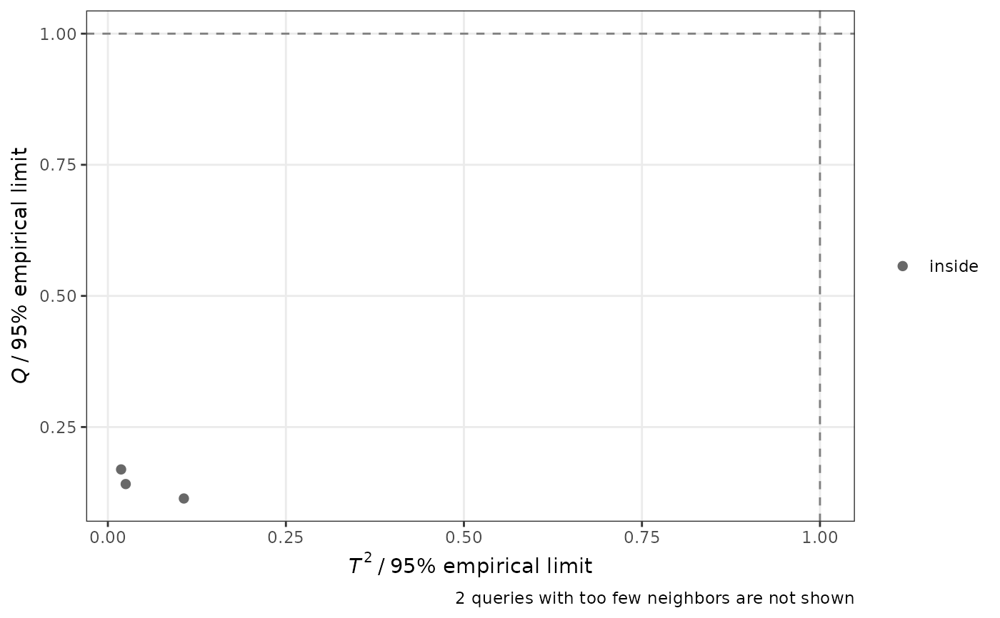
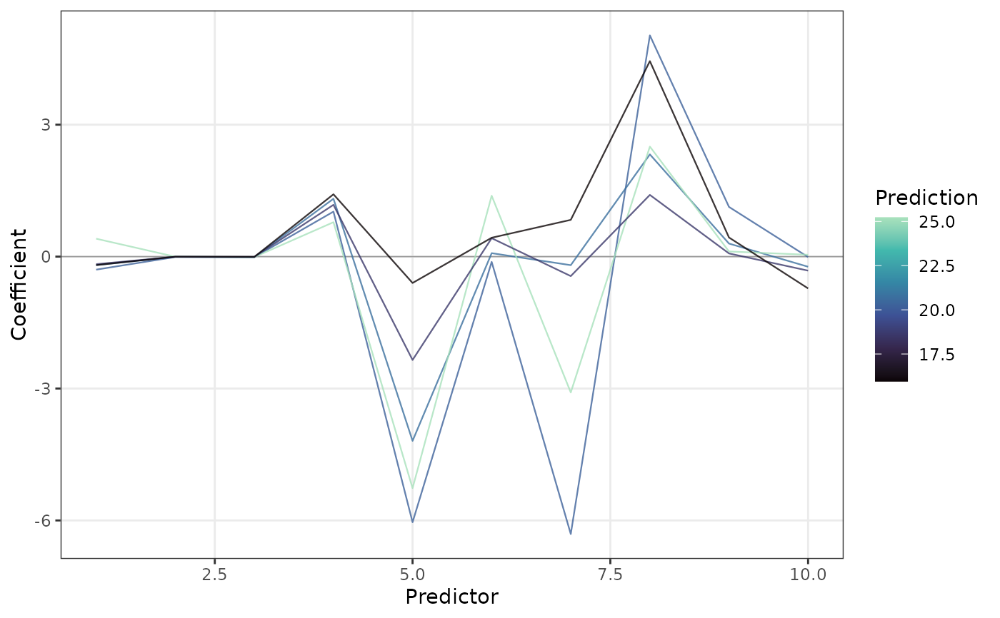
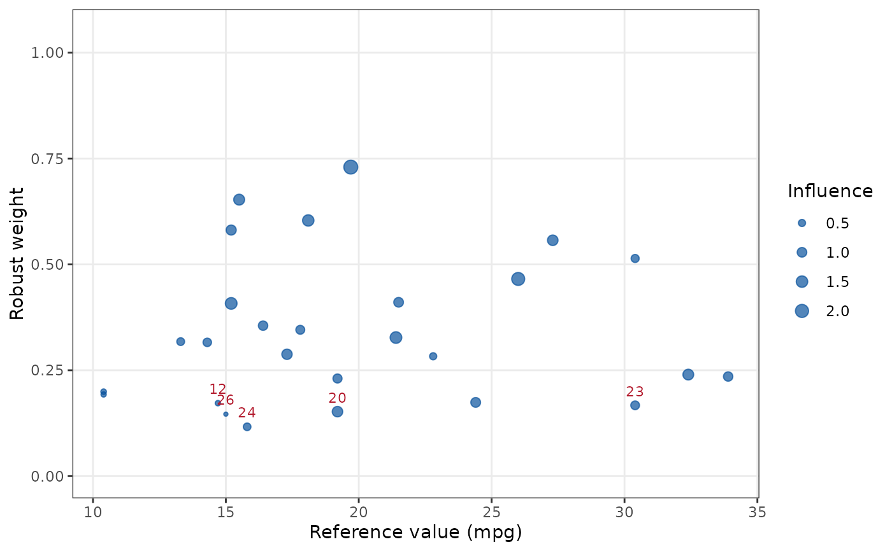
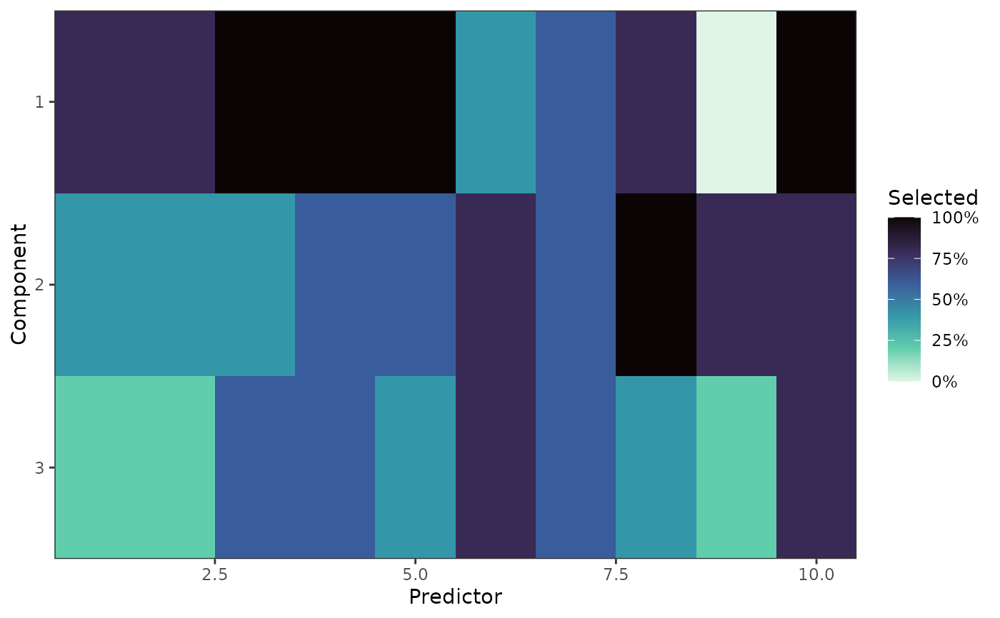

Publication-ready plots of the local models returned by lwpls_local():
plot_reliability(): the \(T^2\) and \(Q\) statistics of the queries divided by their theoretical or empirical limits, or their percentile ranks among the training samples of their local models (seelwpls_local()). Queries beyond a limit are extrapolations of their local model, and their predictions should be checked.plot_coefficients(): the regression coefficients (or VIP) of the local models along the spectral axis, as one line per query colored by its prediction, or as a heatmap of the queries ordered by their prediction. They show which bands drive the predictions and how they change across the range of the outcome.plot_robust_weights(): the robust weights of the training samples (robust models), averaged over the local models in which they take part. Samples with low weights, often wrong reference values, are labeled.plot_selection(): how often each predictor is selected by the sparse local models (sparse models): for each component (default), or by the local models as a whole (any component), with the mean spectrum for reference. On smooth spectra, the components of a sparse model often select different bands, so that almost all predictors are used by the model as a whole: the selection per component is then more informative.
All plots are ggplot2 objects that can be modified further.
Usage
plot_reliability(object, reference = NULL, labels = 5, log = FALSE, ...)
plot_coefficients(
object,
type = c("coefficients", "vip"),
style = c("lines", "heatmap"),
outcome = NULL,
reverse = FALSE,
axis_label = NULL,
...
)
plot_robust_weights(object, labels = 5, outcome = NULL, ...)
plot_selection(
object,
by = c("component", "model"),
spectrum = TRUE,
reverse = FALSE,
axis_label = NULL,
...
)
# S3 method for class 'lwpls_local'
autoplot(
object,
type = c("reliability", "coefficients", "robust_weights", "selection"),
...
)Arguments
- object
An
lwpls_localobject fromlwpls_local().- reference
For
plot_reliability():"empirical"or"theoretical"to plot the statistics divided by these limits, or"percentile"to plot their percentile ranks. Defaults to thelimitsused inlwpls_local().- labels
The number of points to label with their row number: the queries with the largest statistics beyond the limits, or the training samples with the smallest robust weights.
- log
A logical: should the axes be on a log scale? Not available for percentile ranks.
- ...
Arguments passed to the plot function, for
autoplot(). Not used otherwise.- type
For
autoplot(), the plot:"reliability","coefficients","robust_weights"or"selection". Forplot_coefficients(),"coefficients"(default) or"vip".- style
"lines"(default) or"heatmap".- outcome
The outcome (or class) whose coefficients are shown, or that is used on the x axis of
plot_robust_weights(). Defaults to the first.- reverse
A logical: should the spectral axis be reversed, as is usual for wavenumbers?
- axis_label
The label of the spectral axis. Defaults to
"Wavelength"or"Predictor", seelwpls_local().- by
For
plot_selection(),"component"(default) for the selection frequency of each predictor in each component, or"model"for the fraction of local models that use each predictor in any component.- spectrum
A logical: should the mean spectrum of the training data, rescaled to the range of the selection frequencies, be drawn? Only for
by = "model".
Examples
fit <- lwpls_fit(mpg ~ ., data = mtcars[-(1:5), ], num_comp = 3, robust = TRUE, sparsity = 0.3)
local <- lwpls_local(fit, mtcars[1:5, ])
plot_reliability(local)

plot_coefficients(local)

plot_robust_weights(local)

plot_selection(local)
